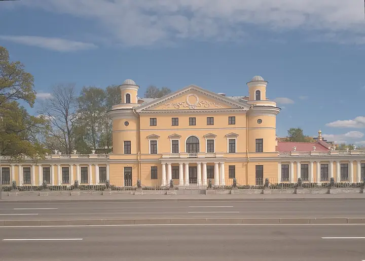

Фото: Никонико962, CC BY-SA 4.0 · Wikimedia Commons
Ограда со львами на набережной · Север
Львы у дачи Безбородко
Двадцать девять сидящих львов держат в пастях тяжёлые цепи, образуя ограду усадьбы над Невой; за ними — отреставрированный особняк. Тёплый свет — на закате.
- ₽ · до 1 500 ₽ на человека
- Новое в каталоге
Позвать сюда: Львы у дачи БезбородкоОткрыть в каталоге: Львы у дачи БезбородкоМаршрут до места: Львы у дачи Безбородко
Адрес и детали
- Адрес
- Свердловская наб., 40
Открыть на Яндекс Картах (в новой вкладке) - Метро
- м. Площадь Ленина
- Район
- Север
- Цена
- до 1 500 ₽ на человека
- Часы работы
- круглосуточно · проверили в ноябре 2026
- Проверено
- работает — проверили в ноябре 2026
Входит в подборки
Похожие рядом


Что ещё рядом

Как позвать
- Выбери план, место или событие — в карточке адрес, цены и маршрут в Яндекс Картах.
- Нажми «Позвать сюда» — соберётся приглашение-игра для свидания или голосование для компании.
- Отправь ссылку в любой мессенджер: тебе ответят, а компания отметит, куда и когда может. Бесплатно и без регистрации.